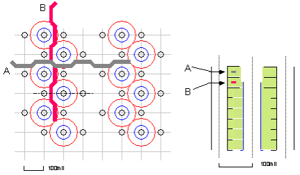

Trace routing between pogo vias
There are areas within our proposed routing where some of the high-speed traces are routed very close to other high-speed signal vias.
Wiggling
An important aspect of routing traces between signal vias, is called "wiggling". To minimize the potential for crosstalk you must apply fine wiggles in the traces where they are routed between signal-carrying vias.
By doing so, you can balance the spacing between ground clearances on layers above and below, and the grounded via for a high-speed layer.
The figure below shows the recommended wiggled routing of the striplines (A and B) between the pogo vias.

Functional changes
- Introduced before SmarTest 6.3.2